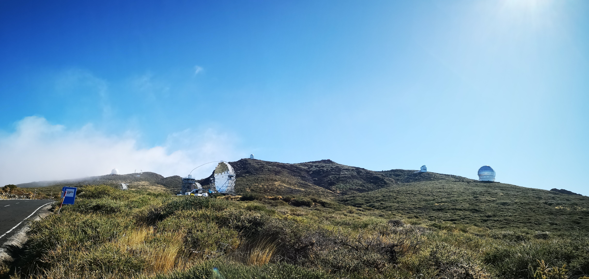
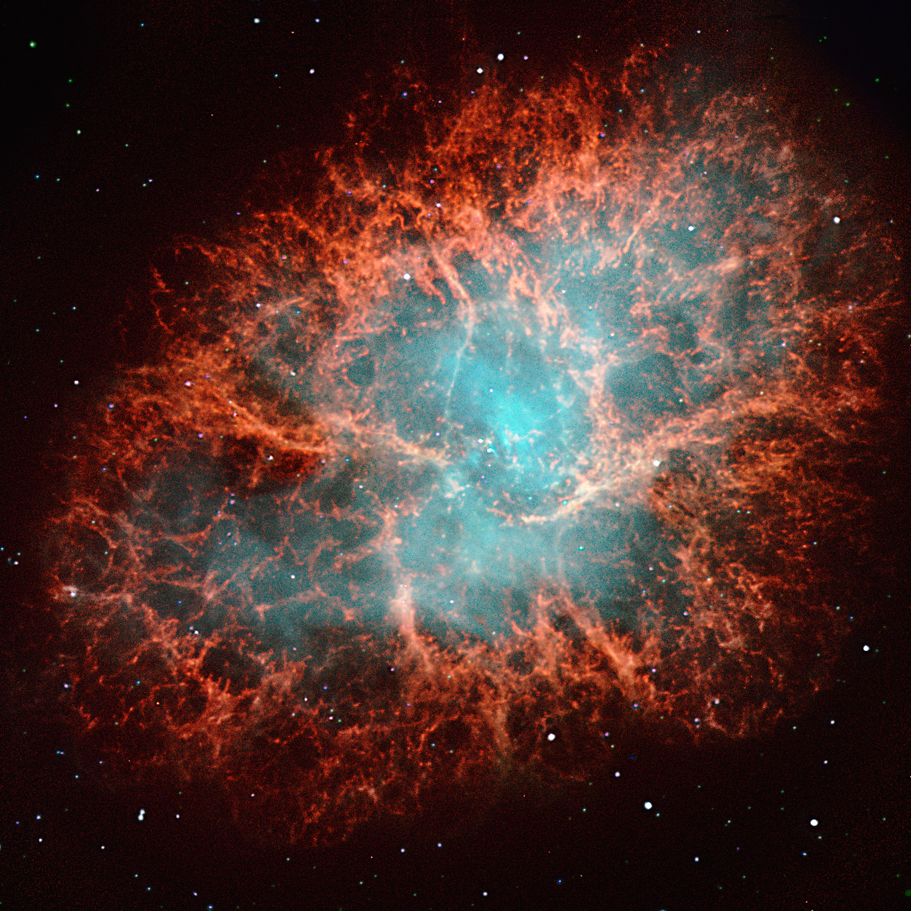

Ceci est un résumé de quelques activités professionnelles de cette fin d’année 2019 pour mes proches, famille ou ami, qui se demandent bien en quoi consiste mon travail à part passer la moitié de mon temps en déplacement loin d’Annecy. En fait, la partie la plus importante de mon activité depuis 3 ans, c’est de participer à la construction de ça :

Et CA, c'est le premier et plus grand télescope du réseau CTA (pour Cherenkov Telecope Array),
appelé LST1 (Large Size Telescope 1), qui doit être construit en partie au Chili et en partie à La Palma
(îles Canaries, Espagne).
Ce réseau de télescopes a pour vocation d’observer la lumière la plus énergétique de l’Univers, appelée
rayons gammas, produite principalement par des évènements dits « violents » - pour les curieux, nous
pourrons citer les explosions de supernovaes, gamma ray bursts, pulsars, noyaux actifs de galaxie
(qui doivent vaguement évoquer quelque chose à ceux présents à ma soutenance de thèse), fusions
d’étoiles à neutrons…
Pourquoi le Chili ou La Palma me demanderont certains. Tout d’abord, construire à la fois dans l’hémisphère sud et dans l’hémisphère nord nous permet ainsi de couvrir la quasi-totalité du ciel. Ensuite viennent un ensemble de considérations, à la fois scientifique (qualité du ciel, météo permettant de maximiser le temps d’observation, altitude…), politique (pays partenaires et stables), économiques et organisationnelles (lieux accueillants déjà de grands observatoires et disposant donc des infrastructures annexes nécessaires – routes, lignes internet haut débit, eau courante… ).
Comme vous pouvez le constater, à La Palma sur El Roque de Los Muchachos, nous ne sommes pas seuls : 
On peut apercevoir de droite à gauche, le Gran Telescopio Canarias, le Telescopio Nazionale Galileo, le Nordic Opitcal Telescope, le LST1, les télescopes de MAGIC,
le télescope solaire Sueco et le télescope William Herschell.
Tandis que mes collègues ingénieurs d’Annecy ont ardemment travaillé à la conception et montage de l’arche ainsi qu’au système de contrôle du déplacement de ce monstre
de 400 tonnes capable de re-pointer n’importe quel point du ciel en moins de 30s - ce qui leur a valu une médaille de cristal collective du CNRS cette année
– je m’échine à concevoir la chaine d’analyse qui permettra d’extraire de la valeur scientifique aux données récoltées.
En Novembre, j’ai eu la chance de pouvoir me rendre deux semaines sur place pour réaliser ce que l’on appelle un « shift »
- c’est-à-dire une période dédiée à l’utilisation et à la prise de données avec un instrument scientifique. J’ai d’autant eu plus de chance de que cette période de shift
correspondait à la période choisie pour réaliser la toute première observation du ciel avec ce télescope dont la construction a été achevé cette année et qui est depuis en phase de test et de calibration.


Le LST1 est encore en phase de test et de calibration avant d’entrer en phase d’exploitation scientifique, puis d’être pleinement intégré dans le réseau CTA (quand ses frères auront été construits). La quasi-totalité des opérations en shift consiste donc encore à réaliser des tests utiles aux experts de chaque sous-système afin de s’assurer de leur bon fonctionnement et intégration dans le système complet que représente le télescope. Mais chanceux que je suis, pendant mon shift, nous avons eu la chance de réaliser les toutes premières observations du ciel pour tester la bonne acquisition et ensuite le bon traitement des données, ceci afin de confirmer que :
- Nous en sommes capable
- Tous les sous-systèmes nécessaires à une telle prise de données fonctionnent correctement
- Nous obtenons des résultats conforment à nos attentes

Cette première observation s’est portée sur un objet bien connu des astronomes : la nébuleuse du Crabe. Ce magnifique reste de supernovae est observable à toutes les longueurs d’ondes, de la radio aux rayons gammas (en passant par l’infra-rouge, l’optique, les ultra-violets, les rayons-X… ) et forme de magnifiques images, notamment en optique :

Ce que nous voyons là est le gaz expulsé lors de la formidable explosion d’une étoile en fin de vie. Ce gaz (les filaments rouges) est illuminé
par les radiations issues de l’explosion et du reste du cœur de l’étoile encore brulant en son centre.
Si j’illustre cette nébuleuse avec une image en optique c’est parce qu’à très hautes énergies, nous ne possédons pas la résolution angulaire
pour obtenir une image étendue du Crabe. Nous ne voyons qu’un point lumineux, semblable à une étoile.
Cet objet est très bien connu et très lumineux, il nous sert donc de chandelle de référence pour
beaucoup de mesures tests – comme ce fut le cas ici.
Quelques heures d’observations et une analyse de données réalisées en partie par votre serviteur
ont suffi pour obtenir un signal très clair en provenance du Crabe.
Ce que nous obtenons après analyse, bien moins impressionnant que l’image du NOT, ça ressemble à ca :
Pour comprendre pourquoi l'image obtenue par le LST1 flambant neuf est moins impressionante que
celle du NOT, il faut comprendre que nous observons à des énergies complètement différentes et de
ce fait avec des méthodes complètement différentes.
Tandis que le NOT observe la lumière dans le domaine du visible (les longueurs d'ondes de 400 à 800
nm que nous percevons avec nos yeux humains) en provenance de l'espace, le LST1 observe la
lumière gamma, la plus énergétique du spectre lumineux. Heureusement pour la vie sur Terre, les
photons gamma ne traverse pas l'atmosphère mais s'y décompose en gerbes de particles, et ce sont
les sous-produits (la lumière Cherenkov, la même qui rend les piscines nucléaires bleues) de ces
gerbes que nous observons au sol.
Les images collectées ressemblent à ca:
S'en suit une analyse de données complexe afin de retrouver leurs origines (le photon gamma
responsable).
Ces observations récentes nous permettent donc de valider à la fois le bon fonctionnement du
télescope dans son ensemble, mais également toute la chaine d'analyse de données. De plus, une
analyse plus détaillée des résultats nous permettra de mieux calibrer l'instrument et de mieux
comprendre si ses performances correspondent à celles attendues et simulées pour à terme
converger vers un fonctionnement optimal.